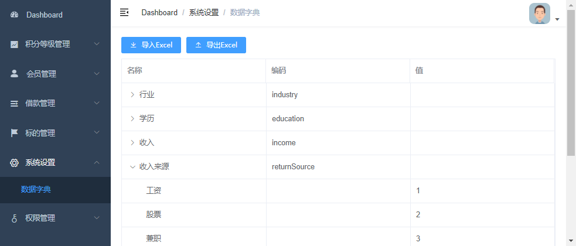
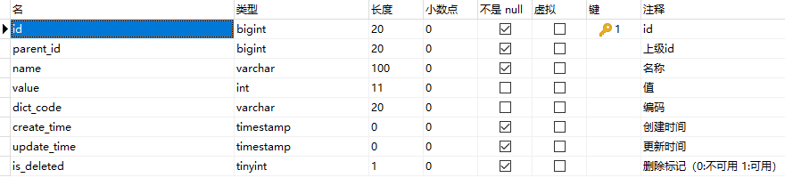

Part07-数据字典¶
01-数据字典的设计¶
需求¶

一、什么是数据字典¶
何为数据字典？数据字典负责管理系统常用的分类数据或者一些固定数据，例如：省市区三级联动数据、民族数据、行业数据、学历数据等，数据字典帮助我们方便的获取和适用这些通用数据。
二、数据字典的设计¶

- parent_id：上级id，通过id与parent_id构建上下级关系，例如：我们要获取所有行业数据，那么只需要查询parent_id=20000的数据
- name：名称，例如：填写用户信息，我们要select标签选择民族，“汉族”就是数据字典的名称
- value：值，例如：填写用户信息，我们要select标签选择民族，“1”（汉族的标识）就是数据字典的值
- dict_code：编码，编码是我们自定义的，全局唯一，例如：我们要获取行业数据，我们可以通过parent_id获取，但是parent_id是不确定的，所以我们可以根据编码来获取行业数据
02-Excel数据批量导入¶
一、后端接口¶
1、添加依赖¶
core中添加如下依赖
<dependencies>
<dependency>
<groupId>com.alibaba</groupId>
<artifactId>easyexcel</artifactId>
</dependency>
<dependency>
<groupId>org.apache.xmlbeans</groupId>
<artifactId>xmlbeans</artifactId>
</dependency>
</dependencies>
2、创建Excel实体类¶
package com.atguigu.srb.core.pojo.dto;
@Data
public class ExcelDictDTO {
@ExcelProperty("id")
private Long id;
@ExcelProperty("上级id")
private Long parentId;
@ExcelProperty("名称")
private String name;
@ExcelProperty("值")
private Integer value;
@ExcelProperty("编码")
private String dictCode;
}
3、创建监听器¶
package com.atguigu.srb.core.listener;
@Slf4j
//@AllArgsConstructor //全参
@NoArgsConstructor //无参
public class ExcelDictDTOListener extends AnalysisEventListener<ExcelDictDTO> {
/**
* 每隔5条存储数据库，实际使用中可以3000条，然后清理list ，方便内存回收
*/
private static final int BATCH_COUNT = 5;
List<ExcelDictDTO> list = new ArrayList();
private DictMapper dictMapper;
//传入mapper对象
public ExcelDictDTOListener(DictMapper dictMapper) {
this.dictMapper = dictMapper;
}
/**
*遍历每一行的记录
* @param data
* @param context
*/
@Override
public void invoke(ExcelDictDTO data, AnalysisContext context) {
log.info("解析到一条记录: {}", data);
list.add(data);
// 达到BATCH_COUNT了，需要去存储一次数据库，防止数据几万条数据在内存，容易OOM
if (list.size() >= BATCH_COUNT) {
saveData();
// 存储完成清理 list
list.clear();
}
}
/**
* 所有数据解析完成了 都会来调用
*/
@Override
public void doAfterAllAnalysed(AnalysisContext context) {
// 这里也要保存数据，确保最后遗留的数据也存储到数据库
saveData();
log.info("所有数据解析完成！");
}
/**
* 加上存储数据库
*/
private void saveData() {
log.info("{}条数据，开始存储数据库！", list.size());
dictMapper.insertBatch(list); //批量插入
log.info("存储数据库成功！");
}
}
4、Mapper层批量插入¶
接口：DictMapper
void insertBatch(List<ExcelDictDTO> list);
xml：DictMapper.xml
<insert id="insertBatch">
insert into dict (
id ,
parent_id ,
name ,
value ,
dict_code
) values
<foreach collection="list" item="item" index="index" separator=",">
(
#{item.id} ,
#{item.parentId} ,
#{item.name} ,
#{item.value} ,
#{item.dictCode}
)
</foreach>
</insert>
5、Service层创建监听器实例¶
接口 DictService
void importData(InputStream inputStream);
实现：DictServiceImpl
注意：此处添加了事务处理，默认情况下rollbackFor = RuntimeException.class
@Transactional(rollbackFor = {Exception.class})
@Override
public void importData(InputStream inputStream) {
// 这里 需要指定读用哪个class去读，然后读取第一个sheet 文件流会自动关闭
EasyExcel.read(inputStream, ExcelDictDTO.class, new ExcelDictDTOListener(baseMapper)).sheet().doRead();
log.info("importData finished");
}
6、Controller层接收客户端上传¶
AdminDictController
package com.atguigu.srb.core.controller.admin;
@Api(tags = "数据字典管理")
@RestController
@RequestMapping("/admin/core/dict")
@Slf4j
@CrossOrigin
public class AdminDictController {
@Resource
private IDictService dictService;
@ApiOperation("Excel批量导入数据字典")
@PostMapping("/import")
public R batchImport(
@ApiParam(value = "Excel文件", required = true)
@RequestParam("file") MultipartFile file) {
try {
InputStream inputStream = file.getInputStream();
dictService.importData(inputStream);
return R.ok().message("批量导入成功");
} catch (Exception e) {
//UPLOAD_ERROR(-103, "文件上传错误"),
throw new BusinessException(ResponseEnum.UPLOAD_ERROR, e);
}
}
}
7、添加mapper发布配置¶
注意：因为maven工程在默认情况下src/main/java目录下的所有资源文件是不发布到target目录下的，因此我们需要在pom.xml中添加xml配置文件发布配置
<build>
<!-- 项目打包时会将java目录中的*.xml文件也进行打包 -->
<resources>
<resource>
<directory>src/main/java</directory>
<includes>
<include>**/*.xml</include>
</includes>
<filtering>false</filtering>
</resource>
</resources>
</build>
8、Swagger测试接口¶
二、前端调用¶
1、创建页面组件¶
创建 src/views/core/dict/list.vue
<template>
<div class="app-container">
</div>
</template>
<script>
export default {
}
</script>
2、配置路由¶
{
path: '/core',
component: Layout,
redirect: '/core/dict/list',
name: 'coreDict',
meta: { title: '系统设置', icon: 'el-icon-setting' },
alwaysShow: true,
children: [
{
path: 'dict/list',
name: '数据字典',
component: () => import('@/views/core/dict/list'),
meta: { title: '数据字典' }
}
]
},
3、实现数据导入¶
<template>
<div class="app-container">
<div style="margin-bottom: 10px;">
<el-button
@click="dialogVisible = true"
type="primary"
size="mini"
icon="el-icon-download"
>
导入Excel
</el-button>
</div>
<el-dialog title="数据字典导入" :visible.sync="dialogVisible" width="30%">
<el-form>
<el-form-item label="请选择Excel文件">
<el-upload
:auto-upload="true"
:multiple="false"
:limit="1"
:on-exceed="fileUploadExceed"
:on-success="fileUploadSuccess"
:on-error="fileUploadError"
:action="BASE_API + '/admin/core/dict/import'"
name="file"
accept="application/vnd.ms-excel,application/vnd.openxmlformats-officedocument.spreadsheetml.sheet"
>
<el-button size="small" type="primary">点击上传</el-button>
</el-upload>
</el-form-item>
</el-form>
<div slot="footer" class="dialog-footer">
<el-button @click="dialogVisible = false">
取消
</el-button>
</div>
</el-dialog>
</div>
</template>
<script>
export default {
// 定义数据
data() {
return {
dialogVisible: false, //文件上传对话框是否显示
BASE_API: process.env.VUE_APP_BASE_API //获取后端接口地址
}
},
methods: {
// 上传多于一个文件时
fileUploadExceed() {
this.$message.warning('只能选取一个文件')
},
//上传成功回调
fileUploadSuccess(response) {
if (response.code === 0) {
this.$message.success('数据导入成功')
this.dialogVisible = false
} else {
this.$message.error(response.message)
}
},
//上传失败回调
fileUploadError(error) {
this.$message.error('数据导入失败')
}
}
}
</script>
03-Excel数据批量导出¶
一、后端接口¶
1、Service层解析Excel数据¶
接口：IDictService
void exportData(OutputStream outputStream);
实现：DictServiceImpl
@Override
public void exportData(OutputStream outputStream) {
List<Dict> dictList = baseMapper.selectList(null);
List<ExcelDictDTO> excelDictDTOList = new ArrayList<>(dictList.size());
dictList.forEach(dict -> {
ExcelDictDTO excelDictDTO = new ExcelDictDTO();
BeanUtils.copyProperties(dict, excelDictDTO);
excelDictDTOList.add(excelDictDTO);
});
EasyExcel.write(outputStream, ExcelDictDTO.class).sheet("数据字典").doWrite(excelDictDTOList);
}
2、Controller层接收客户端请求¶
@ApiOperation("Excel批量导出")
@GetMapping("/export")
public void exportData(HttpServletResponse response) {
try {
response.setContentType("application/vnd.ms-excel");
response.setCharacterEncoding("utf-8");
//将响应的内容以附件的形式下载到本地
response.setHeader("Content-disposition", "attachment;filename=mydict.xlsx");
ServletOutputStream outputStream = response.getOutputStream();
dictService.exportData(outputStream);
} catch (IOException e) {
//EXPORT_DATA_ERROR(104, "数据导出失败"),
throw new BusinessException(ResponseEnum.EXPORT_DATA_ERROR, e);
}
}
二、前端调用¶
1、页面添加导出按钮¶
<el-button
@click="exportData"
type="primary"
size="mini"
icon="el-icon-upload2" >导出Excel</el-button>
2、添加导出方法¶
//Excel数据导出
exportData() {
window.location.href = this.BASE_API + '/admin/core/dict/export'
}
04-数据字典列表展示¶
一、后端接口¶
1、实体类添加属性¶
Dict中添加属性
@ApiModelProperty(value = "是否包含子节点")
@TableField(exist = false)//在数据库表中忽略此列
private boolean hasChildren;
2、Service层实现数据查询¶
接口：IDictService
List<Dict> listByParentId(Long parentId);
实现：DictServiceImpl
@Override
public List<Dict> listByParentId(Long parentId) {
List<Dict> dictList = baseMapper.selectList(new QueryWrapper<Dict>().eq("parent_id", parentId));
dictList.forEach(dict -> {
//如果有子节点，则是非叶子节点
boolean hasChildren = this.hasChildren(dict.getId());
dict.setHasChildren(hasChildren);
});
return dictList;
}
/**
* 判断该节点是否有子节点
*/
private boolean hasChildren(Long id) {
QueryWrapper<Dict> queryWrapper = new QueryWrapper<Dict>().eq("parent_id", id);
Integer count = baseMapper.selectCount(queryWrapper);
if(count.intValue() > 0) {
return true;
}
return false;
}
3、Controller层接收前端请求¶
@ApiOperation("根据上级id获取子节点数据列表")
@GetMapping("/listByParentId/{parentId}")
public R listByParentId(
@ApiParam(value = "上级节点id", required = true)
@PathVariable Long parentId) {
List<Dict> dictList = dictService.listByParentId(parentId);
return R.ok().data("list", dictList);
}
二、前端调用¶
1、api¶
创建 src/api/dict.js
import request from '@/utils/request'
export default {
listByParentId(parentId) {
return request({
url: `/admin/core/dict/listByParentId/${parentId}`,
method: 'get'
})
}
}
2、组件脚本¶
定义data
list: [], //数据字典列表
生命周期函数
created() {
this.fetchData()
},
获取数据的方法
import dictApi from '@/api/core/dict'
// 调用api层获取数据库中的数据
fetchData() {
dictApi.listByParentId(1).then(response => {
this.list = response.data.list
})
},
//延迟加载子节点
getChildren(row, treeNode, resolve) {
dictApi.listByParentId(row.id).then(response => {
//负责将子节点数据展示在展开的列表中
resolve(response.data.list)
})
},
3、组件模板¶
<el-table :data="list" :load="getChildren" row-key="id" border lazy>
<el-table-column label="名称" align="left">
<template slot-scope="scope">
<span>{{ scope.row.name }}</span>
</template>
</el-table-column>
<el-table-column label="编码">
<template slot-scope="{ row }">
{{ row.dictCode }}
</template>
</el-table-column>
<el-table-column label="值" align="left">
<template slot-scope="scope">
<span>{{ scope.row.value }}</span>
</template>
</el-table-column>
</el-table>
4、流程优化¶
数据导入后刷新页面的数据列表
//上传成功回调
fileUploadSuccess(response) {
if (response.code === 0) {
this.$message.success('数据导入成功')
this.dialogVisible = false
this.fetchData()
} else {
this.$message.error(response.message)
}
},
本文总阅读量次